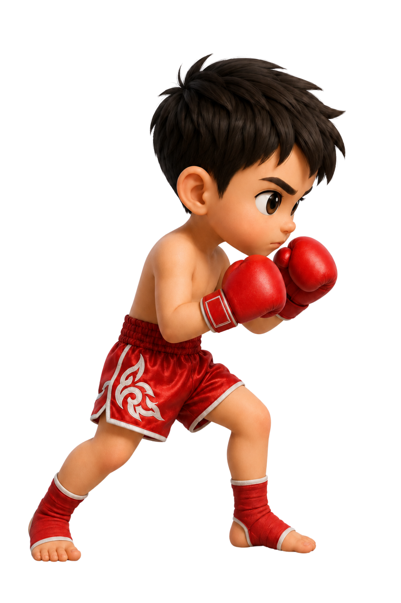
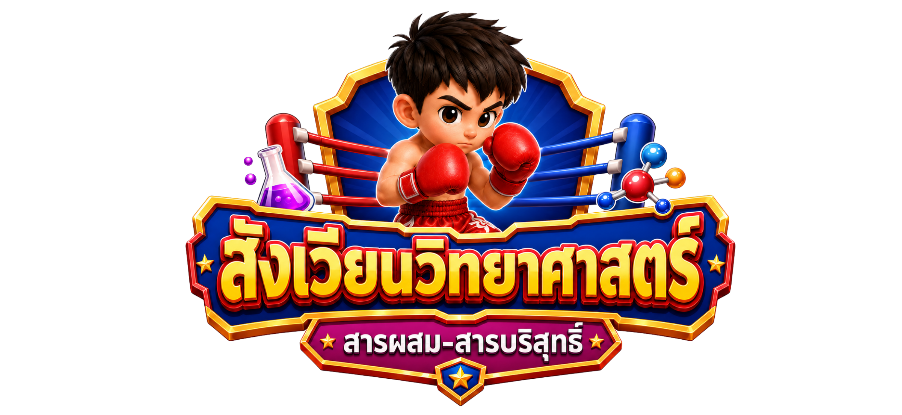

ป้ายด้านบนจะแสดงชนิดหรือลักษณะของสาร ผู้เล่นต้องชกกระสอบทรายฝั่งที่ตรงกับประเภทของสารนั้น
โหมดปกติ: แตะหรือคลิกที่กระสอบฝั่งที่ต้องการ
โหมดเปิดกล้อง 📷: ยืนให้กล้องจับภาพได้ทั้งตัว แล้วใช้มือชกไปยังกระสอบบนหน้าจอ
ผู้เล่นมี 10 หัวใจ ตอบให้ถูกต้องมากที่สุดภายในเวลา 120 วินาที
พักก่อน… แล้วค่อยกลับมายิงต่อ
สรุปผลการเล่น